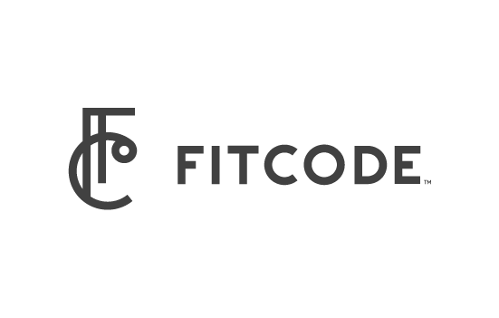

Fitcode Brand
Dec 2014 - Aug 2018
Role: Graphic Designer
In late 2014 I became involved in a small start up company that is innovating in online fashion space, their mission is to help shoppers find a better fit in jeans. One of the first things I did for them was define and build out their brand in time for the the launch of their site in February 2015.
I started with a creative kick-off with the founders of Fitcode, gathering parameters, marketing goals, voice and tone, and visual direction. Then I researched the competition, getting a sense for the brand trends of the fashion industry, the jeans industry, and the tech start-up space we would be entering into. All of this informed my creative process which included hand sketching, mood board exploration, and digital drafts.
I prepped 3 options for the founders and we landed on a monogram direction that features both a unique symbol and a clean geometric wordmark. The color palette is drawn from shades of denim with the chartreuse color of measuring tape (representing our data analytics) used as an accent. As part of this brand build out, I prepared a number of print assets which feature some of my own photography and (in one case) custom embroidery.
